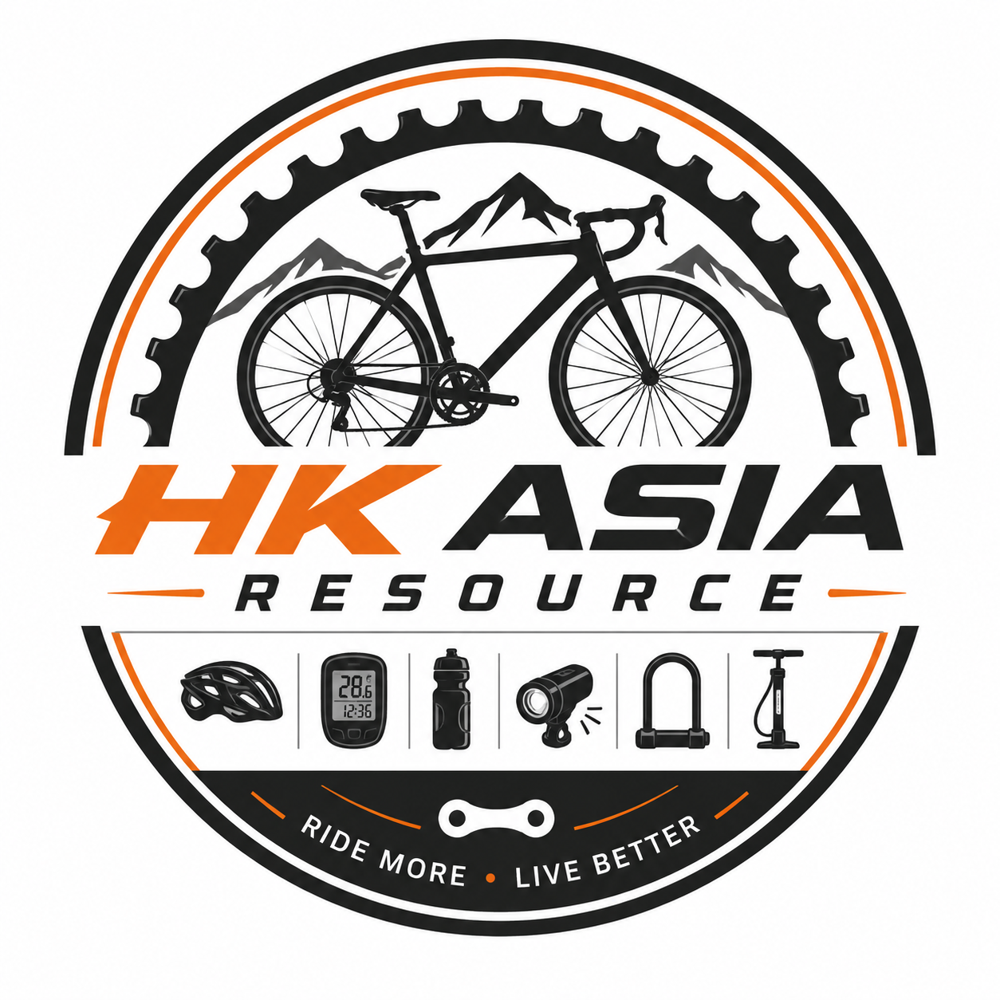

We specialize in providing bicycle equipment that is high-quality and affordable price.
- We offer a wide range of bicycles for beginners, casual riders, and professional cyclists. Every bike is carefully selected to provide quality, comfort, and excellent riding performance.
- Our store provides helmets, bike computers, lights, locks, pumps, and many other cycling essentials. Everything you need for a safer and more enjoyable ride can be found in one place.
- We carefully package every order to ensure it arrives safely and in perfect condition. Our reliable delivery service allows customers to shop online with confidence and convenience.
- We supply maintenance tools, replacement parts, and repair accessories to keep your bicycle in excellent condition. Proper maintenance helps improve performance and extends the lifespan of your bike.